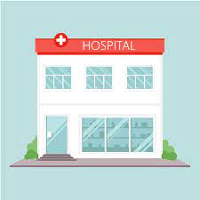

Buscador de alimentos
Además de decirte los valores nutricionales del producto que quieras, te ofrece recomendaciones en base a tu perfil y tus necesidades de alimentación basadas en tu edad, sexo, índice de masa corporal, tus alergias o intolerancias, etc.
Control diario
Un control diario de alimentos es un registro diario de lo que come y bebe cada día. El control diario le ayuda a usted y a su médico a comprender sus hábitos alimenticios. Puede ayudarle a darse cuenta de lo que consume. Una vez que sepa esto, puede hacer cambios en su dieta para mejorar su nutricion.

Ubicacion de hospitales cercanos
Mapa de los centros de dialisis y hospitales. Incluye ubicación, teléfono y horario de atención.
Sistema de alerta
La utilización de un sistema de alertas ( verde, roja, amarilla) que se activarán de acuerdo a la evolución del evento monitoreado